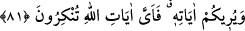

Bazı müfessirler ise şöyle demektedir: Bu âyet itibarıyla “en’âm”dan maksad, sekiz
çift hayvandır. Yani, hem erkeklik hem de dişiliği hesaba katılmak şartıyla deve, sığır,
koyun ve keçidir. Bu bakımdan, “bunları binek olarak kullanmanın ve yeme”nin anlamı,
“binme” ve “yeme” fiillerinin bu çiftlerin tamamına taallukları itabarıyladır. Ancak bu
ikisinden her birinin sekiz çifte birden taalluk etmesi câiz olacak şekilde değildir. Yine
bu ikisinden her biri çiftlerin belli bir kısmına taalluk edecek yâni birinin talluk ettiğine
öteki taalluk etmeyecek şekilde de değildir. Aksine çiftlerin bir kısmına meselâ koyuna
sadece yeme taalluk edecek; deve ve sığır gibi bazısına da her ikisi birden yâni hem
binme hem de yeme taalluk edecek şekildedir. “Menfaat” kavramı bunların hepsini içine
almakta; “arzu ve ihtiyaç duyulan şeylere ulaşma” kavramı ise sadece sığırı
kapsamaktadır.
Âyette, Allah Teâlâ’nın behîmî, hayvanî nefsi, o ulvî ruhlarınız için binit kıldığına
dâir bir işaret vardır. Hakkı müşâhede etme ve yakınlık makamları gibi “ihtiyaçlarınıza
onların üzerinde ulaşırsınız. O nefsin sıfatlarında sizler için hayvânî şehvet gibi başka
birtakım menfaatler de vardır. Şehvet menfaati; aşk ve öfkenin, ayrıca dînî hamiyetin
biniti olmasıdır. Hırs da böyle bir menfaat olup himmetin binitidir. Bu binitler
sâyesindedir ki mürid, ulvî mertebelere erer. Nitekim bunlar üzerinde ve gemiler yâni
kalbi sıfatlar üzerinde Hak Teâlâ’nın yanına, civarına taşınırsınız” buyrulmaktadır.
Hakikatten habersiz gafiller gibi fırsatı kaçırma.
Kol ve kanadın varken bu âlemden sefer kıl.
81. Allah size âyetlerini gösteriyor. Şimdi, Allah’ın âyetlerinden hangisini inkâr
edersiniz?
“Allah size” sonsuz kudretine ve engin rahmetine delâlet eden “âyetlerini” delillerini
“gösteriyor.” Bunlardan her biri normal seviyede aklı olanın bile inkâra cür’et
edemeyeceği âşikâr birer delil olduğu halde “şimdi, Allah’ın âyetlerinden hangisini
inkâr edersiniz?”
“Âyetler”in lâfza-i celâle izâfe edilmesi; yâni bizzat Yüce Allah’ın âyetleri olduğunun
belirtilmesi, onların ne kadar muazzam olduklarını öğretmek ve inkâr edilmeleri
durumunda ne korkunç bir duruma düşüleceğini belirtmek içindir.
Şayet “ ” lafzı, müennes bir kelimeye izâfe edildiği için ondan müenneslik almış
olması hasebiyle doğru olanın, te’nîs tâsı ile “
” denmesi değil miydi? diyecek
olursan derim ki: Yaygın ve genel olan “eyyü”nün müzekker olarak kullanılmasıdır.
Müennesi (eyyetü) ise çok az kullanılır. Zira belli bir özellik bildirmeyen isimlerde
müzekkerlik müenneslik ayrımına giderek himâr-himâra, insân-insâne demek, pek